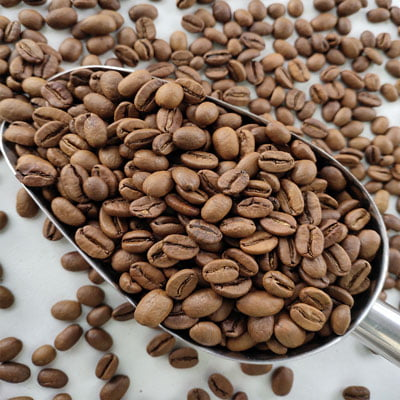
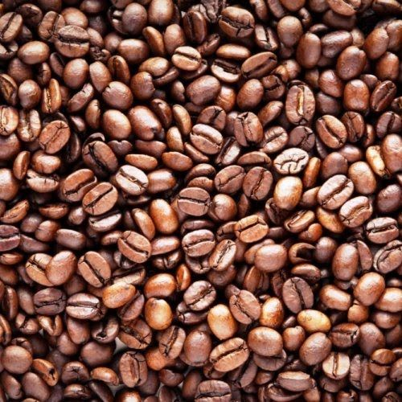
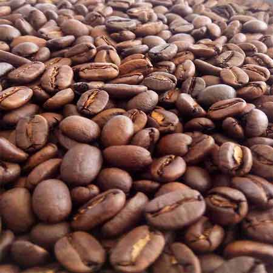
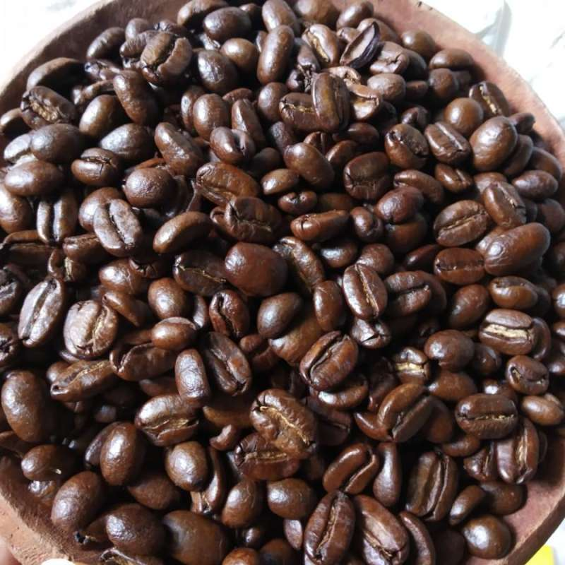
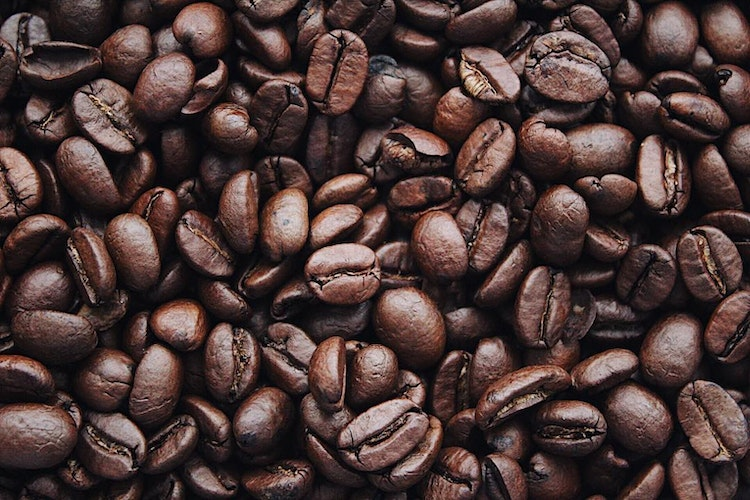
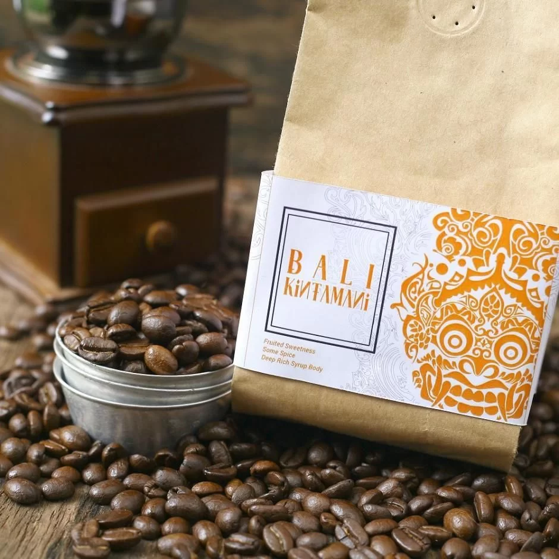
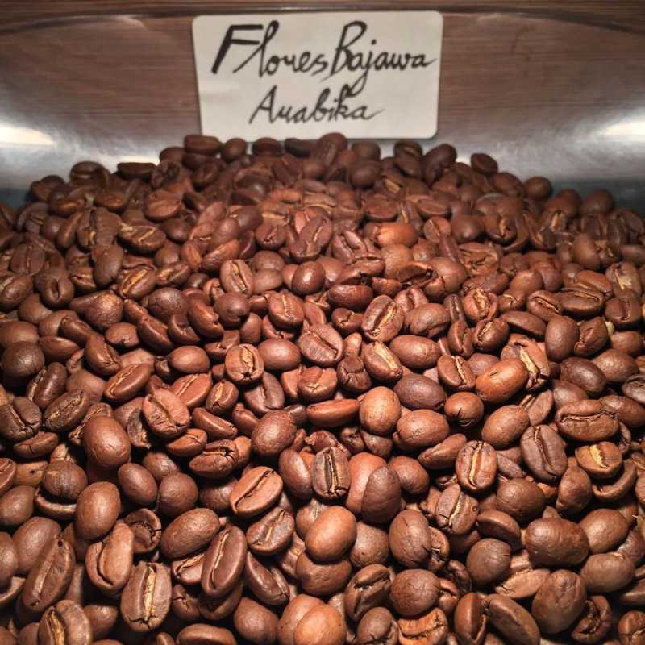

Kopi
Jenis Kopi

Arabica
Kopi Arabica memiliki tingkat keasaman yang tinggi, aroma kompleks, serta rasa halus dan ringan. Kopi ini cocok untuk yang menyukai keasaman dan aroma yang unik serta kelembutan rasa. Umumnya memiliki tingkat kafein yang rendah.

Robusta
Kopi Robusta lebih memiliki keasaman sedang dengan aroma rempah yang kuat dan tingkat kepahitan yang tinggi. Kopi ini cocok untuk yang menginginkan rasa kopi yang tebal, kuat, dan kafein yang cukup tinggi.

Kopi Gayo
Kopi Gayo terkenal dengan keasaman rendah, memiliki aroma rempah yang unik, serta kepahitan sedang. Rasanya cenderung halus, ringan, dan menyegarkan. Cocok bagi yang menyukai cita rasa kompleks dengan tingkat kafein sedang.

Kopi Mandailing
Kopi ini memiliki karakteristik keasaman sedang dengan kepahitan rendah, aroma rempah, dan rasa penuh serta tebal. Cocok untuk penikmat kopi yang mencari rasa kopi yang bertekstur tebal tetapi tidak terlalu pahit.

Kopi Toraja
Memiliki keasaman tinggi dengan aroma rempah dan buah yang kompleks. Kopi Toraja memiliki kepahitan rendah, rasa halus, dan manis, cocok bagi penikmat kopi yang mencari rasa kopi kompleks dan menyegarkan.

Kopi Bali Kintamani
Kopi ini dikenal dengan aroma rempah dan buah yang khas, serta tingkat kepahitan sedang. Kopi Bali Kintamani memiliki karakteristik rasa segar, dengan tingkat kafein sedang, cocok bagi mereka yang mencari rasa kopi yang unik dan penuh cita rasa.

Kopi Flores Bajawa
Kopi Flores Bajawa memiliki keasaman sedang, aroma rempah yang kuat, dan kepahitan sedang. Rasa kopi ini penuh dan halus, serta memiliki tingkat kafein sedang, cocok bagi penikmat yang mencari rasa kopi yang kaya dan lembut.